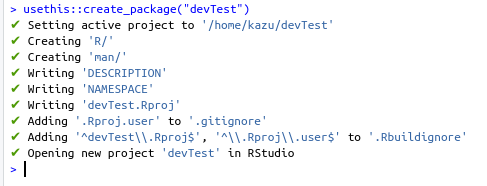
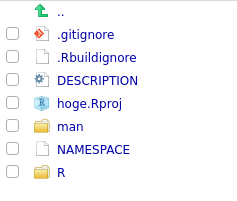
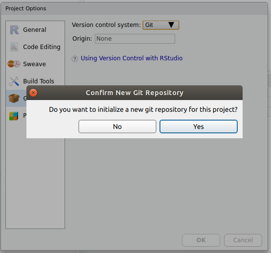
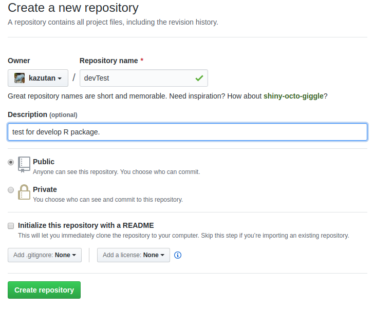
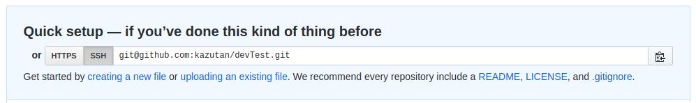
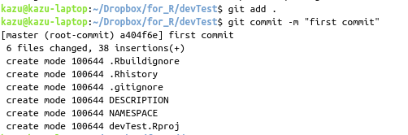
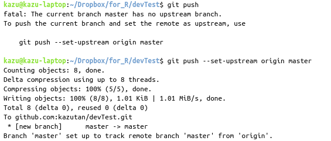

3 repositoryとproject
3.1 repository、projectとは
repository(リポジトリ、レポジトリ)は、雑に言うとコードや画像などのファイルを束ねているものです。
https://ja.wikipedia.org/wiki/%E3%83%AA%E3%83%9D%E3%82%B8%E3%83%88%E3%83%AA
アプリケーションに必要なものは一つにまとめてしまったほうが開発･運用･利用が便利ですよね。
project(ここでは一般的な意味ではなくRStudio上のprojectとします)は、(すごく雑に言うと)R上でのrepositoryに(ほぼ)相当します。RStudioでプロジェクトを準備すると…
- 実際のタスク単位でファイルをまとめていける
- そのプロジェクトで色々設定することができる
- working directoryをプロジェクトで固定できる
- Rのoptionsをプロジェクト単位で設定できる
- history, buildとか管理できる
- 他にもいろいろ便利
なので、RStudioを使うなら基本的にprojectを作ってそこで作業しましょう。
今回はパッケージ開発のお話なので、それを前提としたprojectおよびrepositoryを準備していきます。
3.2 projectの準備
まずは、作るパッケージ名を考えましょう。Rのパッケージ名は[a-zA-Z0-9]で考えてください。ここではdevTestとします。
RStudioでは、パッケージ開発用にprojectを新規で準備することができます…が、今ではもっと簡単に準備できます。以下の一行でOKです:
usethis::create_package("path_to_project")引数には、自分がプロジェクトを設置したいパスを指定してください。すると以下のようになります:

すると、自動的にパッケージ開発に必要なファイルが準備されます:

次に、このプロジェクトにgitをあてるように準備します。メニューの[Tools] - [Project Option…]へ進み、gitを有効化(初期化)します:

これでprojectの準備は(ひとまず)完了です。
3.3 repositoryの準備
パッケージを設置するリポジトリを準備します。GitHubにアクセスしてログインし、repositoryを新規作成します。

リポジトリ名はさっき考えたプロジェクト名(パッケージ名)がいいでしょう。ポイントはREADMEやgitignore、LICENSEは準備しなくてOKというところです。空っぽのほうがいいです。
この後紐づけするために、以下のものをメモ(コピー)しときましょう:

3.4 projectにrepositoryを紐付ける
ここがちょっと面倒で、gitの知識が必要となります。gitに関する詳しい説明は省略します。
ここではRStudioのTerminalを利用してやっていきます。先程準備したprojectを開き、RStudioのTerminalタブをクリックします。gitコマンドを利用して紐付けます。
まずGitHub上のリポジトリをremoteとして登録します:
git@~~の文字列はrepository作成後にメモしたものです。
次にバージョン管理をするファイルを登録(add)してcommitします:

git addはバージョン管理するファイルを登録するコマンドです。.は｢現在のディレクトリ内全部(ただし.gitignoreで外すものは除く)｣を意味します。今回は最初の登録で資料的に書くのが面倒だったので.を使いましたが、普段は極力使わないでください。
git commitはコミットをするコマンドです。コミットは、雑に言うと｢RPGのセーブみたいなもの｣です。-m "message"とすると、コミットメッセージを含めてそのままコミットできます。このオプションをつけないと、viなどのテキストエディタが開かれてコミットメッセージなど設定できます。ここでは省略します。
これでコミットができたので、これをGitHub上にpushします:

初回はupstream originを設定していないので、git pushだけではうまくいきません(エラーメッセージ参照)。なので2つめのコマンドのように設定してください。
なお、gitはエラーメッセージやマニュアルが丁寧なので、まずはエラーメッセージやドキュメントを読む習慣をつけましょう。
3.5 RStudio上でのgit操作
(時間があれば説明します)
3.6 FAQ
(あとで書く)
3.7 参考資料
(あとで書く)